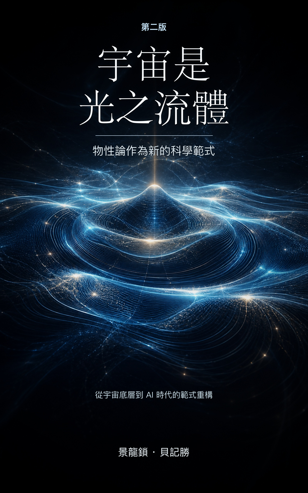

第二版 · 繁體中文公開閱讀版
宇宙是光之流體：物性論作為新的科學範式
一場從宇宙底層、物理公式、復演實驗到 AI 時代的範式重構。這不是把舊公式重新包裝，而是追問：世界究竟靠什麼承載、傳播、留下來，並接受外部審判。
7 部
26 章
104 條公式正典
公開 復演入口

站內搜尋
輸入「W 玻色子」「物性 AI」「關係腔」「復演」等關鍵詞，可以快速定位章節。
完整目錄
每一章都已拆成獨立網頁，適合手機與桌面閱讀。
序章
序章 ｜ 不是一種觀點，而是一套新範式
部
第一部 ｜ 宇宙不是空的
章
第一章 ｜ 世界不是空房間
章
第二章 ｜ 光不是小球快遞，而是狀態接力
章
第三章 ｜ 物質的真相：一場「結構化的停頓」
章
第四章 ｜ 時間的幻象：宇宙不提供河流，只提供賬本
部
第二部 ｜ 造物：宇宙發動機的八個齒輪
章
第五章 ｜ 發動機的點火：勢差（Δσ）與合法意外（η）
章
第六章 ｜ 承載萬物的溫床：關係腔（Π）與守恆核（Q）
章
第七章 ｜ 最冷酷的審查：顯化之門（E_show）與觀察刻度（Ω）
章
第八章 ｜ 宇宙的終極會計學：黑子（B_σ）與正性成果（Σ⁺）
部
第三部 ｜ 歸根：舊物理的尋根之旅
章
第九章 ｜ 新範式不是燒掉舊地圖，而是找到共同的山脈
章
第十章 ｜ 力不是小手，是坡度——牛頓與引力的物性歸根
章
第十一章 ｜ 幽靈的舞步：可能性雲與關係腔的局域彎曲（薛定諤與麥克斯韋的物性歸根）
章
第十二章 ｜ 常數不是死數字，而是宇宙的轉接頭
部
第四部 ｜ 淬火：物質如何從背景海中活下來
章
第十三章 ｜ 短亮不是長留：一個擾動的七道生死門（HFCD 的誕生）
章
第十四章 ｜ 從一塊墊腳石，走到一片新大陸：點、脊、族、島的偉大跋涉
章
第十五章 ｜ 終極審判：從白盒法庭到 28 維星空巨網的硬核對決
章
第十六章 ｜ 盾與矛的決裂：隱藏保護與可見顯化的分道揚鑣
部
第五部 ｜ 升堂：走上世界最高物理審判臺
章
第十七章 ｜ 裁判室不能是黑箱：標準模型的白盒化
章
第十八章 ｜ 第一把硬尺子：W 玻色子的精準盲測
章
第十九章 ｜ 28 維的全球體檢表：走進 EWPO 協方差的星空巨網
章
第二十章 ｜ 真正的高手知道哪裡不該動：Higgs 靜默與 Flavour 隔離腔體的智慧
章
第二十一章 ｜ 閉合的真相：新範式如何克制地宣告勝利
部
第六部 ｜ 躍遷：AI 時代與文明的新賬本
章
第二十二章 ｜ 一隻會接話的鸚鵡，永遠不懂下雨的寒冷
章
第二十三章 ｜ 大模型的真實賬單：文明最貴的成本，是「走錯路」
章
第二十四章 ｜ 物性 AI：從「詞語預測」走向「狀態生成」的六層鋼鐵架構
章
第二十五章 ｜ 社會與組織的物性診斷：從 KPI 假光到多門同閉
部
第七部 ｜ 長存：把道路交給後來者
章
第二十六章 ｜ 科學不能只靠作者的聲音活著：公式正典與證據矩陣的「開源」史詩
附錄
附錄與後記 ｜ 留給未來的尺子與星圖
附錄
附錄一 ｜ 拒絕裸奔的真理：104條公式正典的「閱讀指南」
附錄
附錄二 ｜ 啟動發動機的鑰匙：V32 / V33 / V34 復演包與在線復演室
附錄
附錄三 ｜ 留給未來的一百年的星圖：五大開放考題
後記
後記 ｜ 降落：從泥土裡長出的蒼穹，與三個現實的錨點